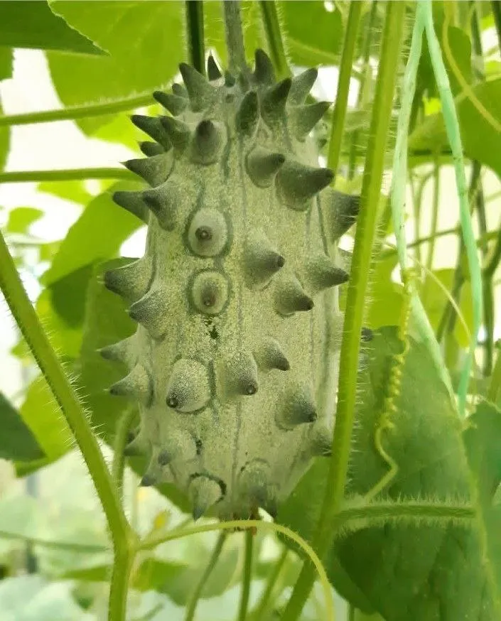
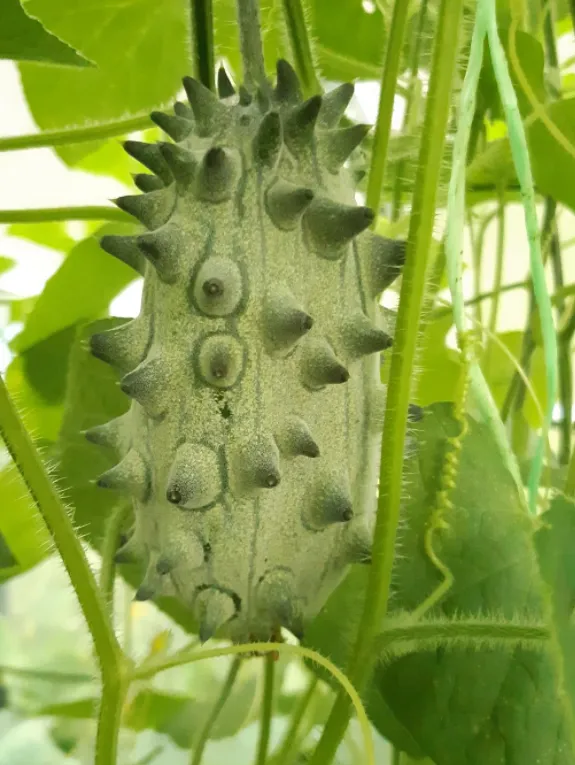

Экзотический фрукт африканского происхождения с шипами на поверхности. Мякоть желеобразная, вкус от огуречного до сладкого многогранного, напоминает смесь киви, ананаса и банана.
Преимущества культуры для вашего участка.
Каждый сорт уникален — от формы до вкуса.
Кивано в разные сезоны: от всходов до сбора урожая.


Всё, что нужно знать о культуре: от посадки до хранения.
Кивано выращивают практически так же, как обычные огурцы. Это теплолюбивая культура, не переносящая заморозков.
Вкус меняется от огуречного (у недозрелых) до сладкого многогранного — смесь киви, ананаса, апельсина и банана. Очень освежает в жаркий день.
Спелый плод разрезают пополам и ложкой едят желеобразную мякоть. Можно также добавлять в смузи, коктейли, варенье и фруктовые салаты.
Кивано выращивают так же, как огурцы. Через рассаду, в солнечном месте. Культура не переносит заморозков, оптимальная температура +20…+26°C.
Кивано — рекордсмен по содержанию калия, полезен при сердечно-сосудистых заболеваниях. Сок повышает тонус и укрепляет иммунитет.
Посадочный материал из коллекции Batatchudo и рекомендации по выращиванию.